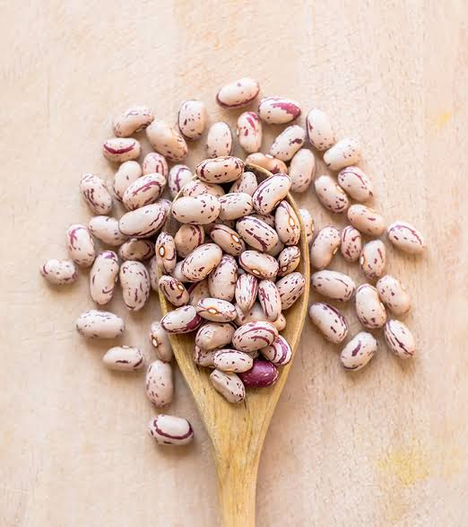

Beans

Description
Ingredients
2 cups pinto beans
5 cups of water
1 serrano pepper
1/2 onion
salt
pepper
minced garlic
Steps
Rinse beans for 1 hour
In a crockpot, combine all ingredients
Cook on high for 7 hours